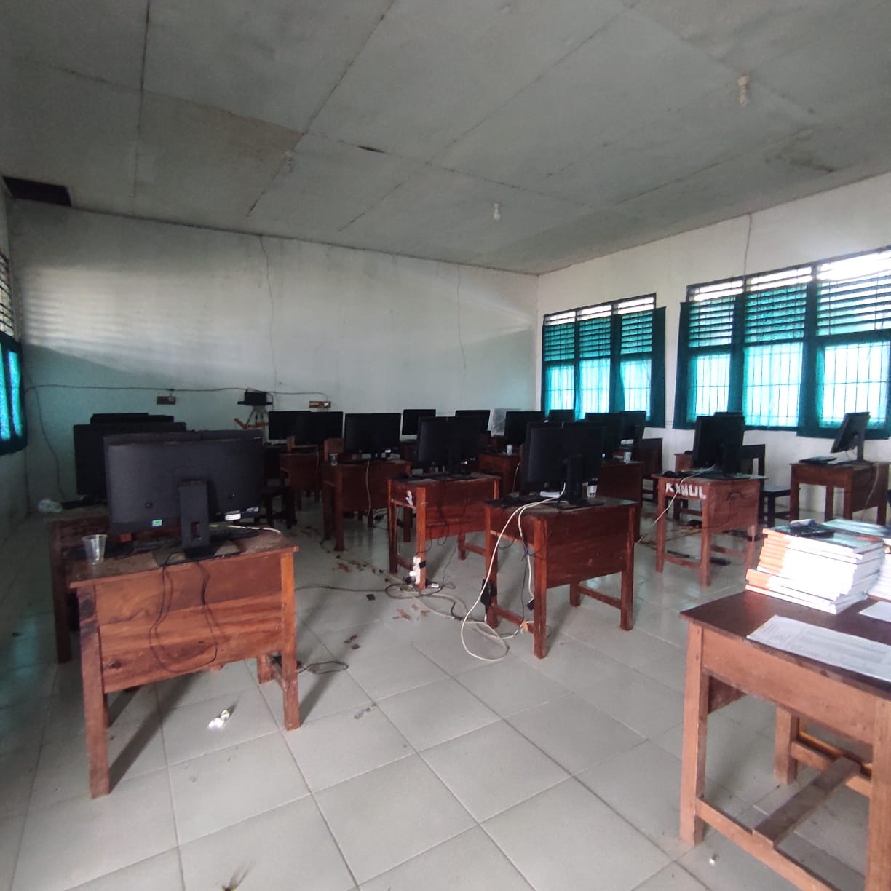

Ruang Laboratorium SMAN 1 Lasalimu Selatan
Ruang laboratorium komputer di SMAN 1 Lasalimu Selatan dirancang khusus untuk untuk mendukung pembelajaran.Ruang ini dilengkapi dengan perangkat keras,lunak,dan jaringan yang mendukung kegiatan siswa.Kapasitas komputer didalam memiliki 20 komputer ditambah 1 untuk guru. Laboratorium di SMAN 1 Lasalimu Selatan biasa digunakan untuk ujian Asesmen dan berbagai pembelajaran lainnya.